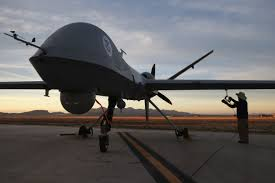
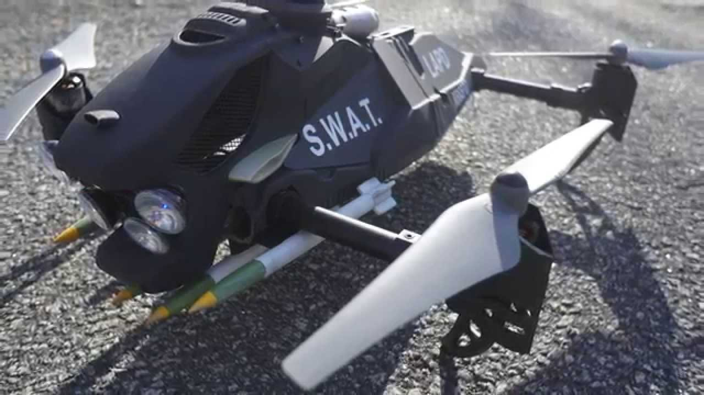
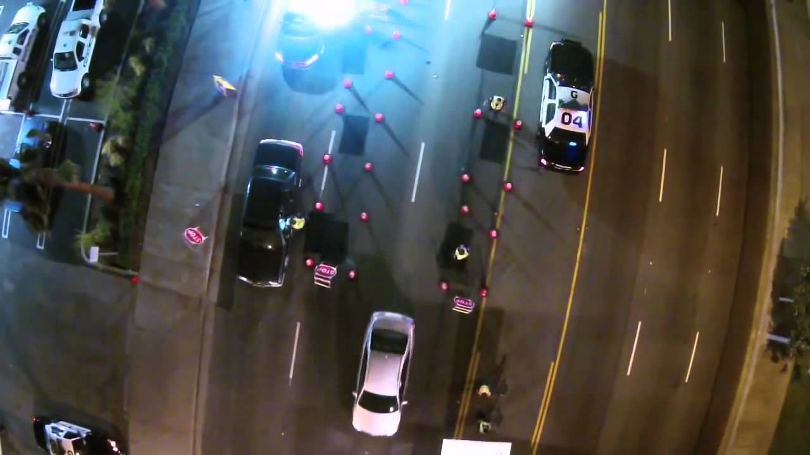
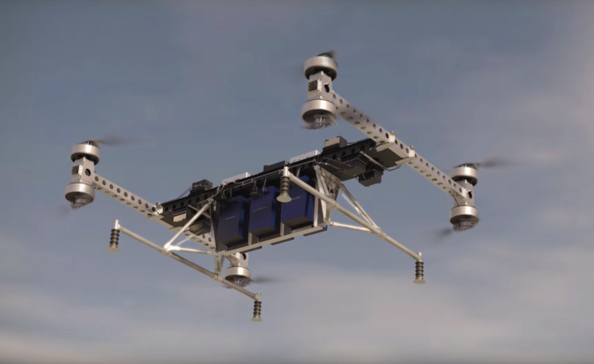
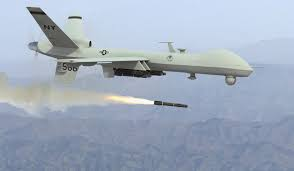
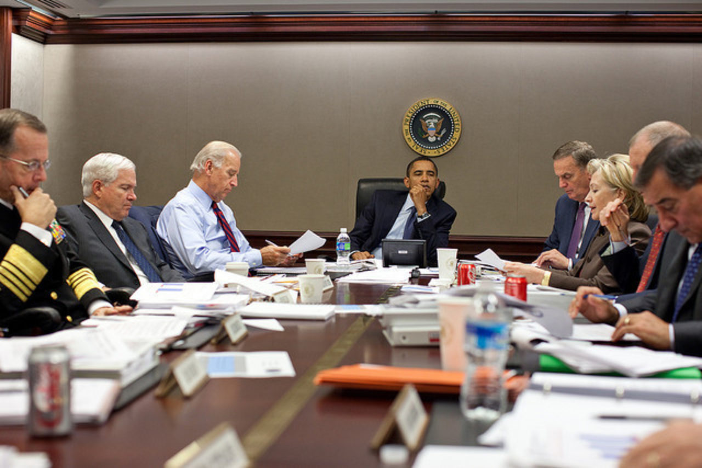
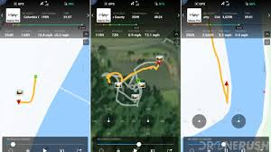

Research Paper
Drones can secure our physical safety by Law enforcement, military, and affects the public.
This could help the police community because drones could help them by not losing no troops. Police used drones, to help the people to be more secure because they have camara over the sky securing any suspicious activity.
Drones are better than vehicles because they could prevent any car accident and used like a helicopter with a long range camera with a fast velocity. It is a benefit because could save cops lives because drones could be a eye in the sky which could send commands to police officers which would prevent dangerous situation. Drone could be used to send any package in safe condition.
The United States government should, used more drones for warfare because preventing soldiers from dying protects their country and balances their amount of resources.
Drones could be used by the military because they have special equipment; such as, the Predator drone which can be used to locate nuclear bombs and gun trafficking.
Although the United States has launched more than 400 drone strikes against militants in Pakistan since 2004, Monday’s announcement marked the first time the Pakistani government has admitted to carrying out a lethal strike with its own drone
Drones could be used in the police department because they have a GPS which could track any crimes and transferred to the operator to make a operation.